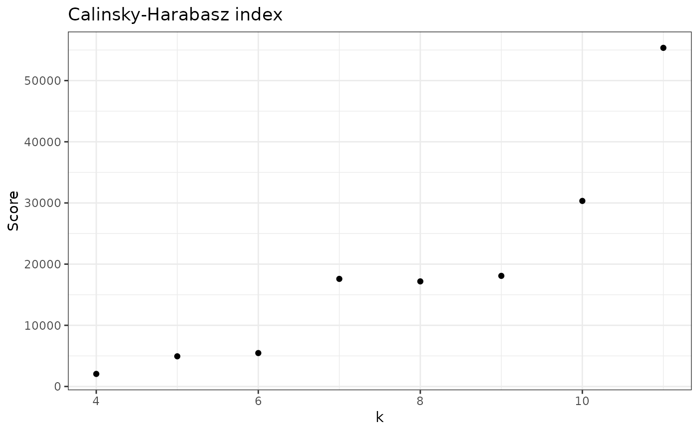

Calculates Calinski-Harabasz pseudo F-statistic (CH) for a given sample
Usage
check_CH(
data,
sample_id,
samples_col = "Sample",
abundance_col = "Abundance",
range = 2:10,
with_plot = FALSE,
...
)Arguments
- data
A data.frame with, at least, a column for Abundance and Sample. Additional columns are allowed.
- sample_id
String with name of the sample to apply this function.
- samples_col
String with name of column with sample names.
- abundance_col
String with name of column with abundance values.
- range
The range of values of k to test, default is from 2 to 10.
- with_plot
If FALSE (default) returns a vector, but if TRUE will return a plot with the scores.
- ...
Extra arguments.
Details
CH is an index used to decide the number of clusters in a clustering algorithm.
This function, check_CH(), calculates the CH index for every k in a pre-specified range
of values. Thus providing a score for each number of clusters tested (k). The default
range of cluster values (k) is range = 2:10 (see why this is in Pascoal et al., 2024, in peer review).
However, this function may calculate the CH index for all possible k's.
Note that CH index is not an absolute value that indicates the quality of a single clustering. Instead, it allows the comparison of clustering results. Thus, if you have several clusterings, the best one will be the one with higher CH index.
Data input
This function takes a data.frame with a column for samples and a column for abundance (minimum), but can take any number of other columns. It will then filter the specific sample that you want to analyze. You can also pre-filter for your specific sample, but you still need to provide the sample ID (sample_id) and the table always needs a column for Sample and another for Abundance (indicate how you name them with the arguments samples_col and abundance_col).
Output options
The default option returns a vector with CH scores for each k. This is a simple output that can then be used
for other analysis. However, we also provide the option to show a plot (set with_plot = TRUE) with
the CH score for each k.
Explanation of Calinski-Harabasz index
The CH index is a variance ratio criterion, it measures both separation and density of the clusters. The higher, the better, because it means that the points within the same cluster are close to each other; and the different clusters are well separated.
You can see CH index as:
$$CH = \frac{\text{inter cluster dispersion}}{\text{intra cluster dispersion}}$$
To calculate inter-cluster:
Let \(k\) be the number of clusters and BGSS be the Between-group sum of squares,
inter-cluster dispersion is $$\frac{BGSS}{(k-1)}$$
To calculate BGSS:
Let \(n_k\) be the number of observations in a cluster, \(C\) be the centroid of the dataset (barycenter) and \(C_k\) the centroid of a cluster,
$$BGSS = \sum_{k = 1}^{k}{n_k * \left\lvert C_k-C \right\rvert^2}$$
Thus, the BGSS multiplies the distance between the cluster centroid and the centroid of the whole dataset, by all observations in a given cluster, for all clusters.
To calculate intra-cluster dispersion:
Let \(WGSS\) be the Within Group Sum of Squares and \(N\) be the total number of observations in the dataset.
intra-cluster dispersion
$$\frac{WGSS}{(N-1)}$$
Let \(X_ik\) be i'th observation of a cluster and \(n_k\) be the number of observations in a cluster.
$$WGSS = \sum_{k=1}^{k}\sum_{i=1}^{n_k}\left\lvert X_ik - C_k \right\rvert$$
Thus, WGSS measures the distance between observations and their cluster center; if divided by the total number of observations, then gives a sense of intra-dispersion.
Finally, the CH index can be given by:
$$CH = \frac{\sum_{k = 1}^{k}{n_k * \left\lvert C_k-C \right\rvert^2}} {\sum_{k=1}^{k}\sum_{i=1}^{n_k}\left\lvert X_ik - C_k \right\rvert} \frac{(N-k)}{(k-1)}$$
References
Calinski, T., & Harabasz, J. (1974). A dendrite method for cluster analysis. Communications in Statistics - Theory and Methods, 3(1), 1–27. Pascoal, F., Branco, P., Torgo, L. et al. Definition of the microbial rare biosphere through unsupervised machine learning. Commun Biol 8, 544 (2025). https://doi.org/10.1038/s42003-025-07912-4
Examples
library(dplyr)
#>
#> Attaching package: ‘dplyr’
#> The following objects are masked from ‘package:stats’:
#>
#> filter, lag
#> The following objects are masked from ‘package:base’:
#>
#> intersect, setdiff, setequal, union
# Just scores
check_CH(nice_tidy, sample_id = "ERR2044662")
#> [1] 677.3258 1821.4258 2054.8869 4933.9560 5465.1344 17589.0320 17179.8092
#> [8] 18083.3126 30332.3447
# To change range
check_CH(nice_tidy, sample_id = "ERR2044662", range = 4:11)
#> [1] 2054.887 4933.956 5465.134 17589.032 17179.809 18083.313 30332.345
#> [8] 55354.240
# To see a simple plot
check_CH(nice_tidy, sample_id = "ERR2044662", range = 4:11, with_plot=TRUE)
